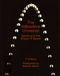

| 9 of 11 |
After spending ten years to make more than 300 pictures of New York City, Berenice Abbott turned to science. She knocked on the doors of scientists, telling them, You scientists are the worst photographers in the world and you need the best photographers in the world and Im the one to do it. (Kay Weaver and Martha Wheelock, Berenice Abbott, A View of the 20th Century, Ishtar Films, 1992) She invented what she needed as she worked, developing cameras and equipment like specialized tripods as well as techniques. After the Russian space capsule Sputnik was launched in 1957, people became more interested in science and scientists started listening to Berenice Abbott. This picture illustrating a pendulum appeared in The Attractive Universe: Gravity and the Shape of Space, a book about physics published in 1969.
Abbott cropped the photo to give it long, slender edges that complement the hanging ball. Determined to prove that a photograph could document scientific fact as well as communicate the beauty of science, she wrote, The scientific photographs had to be carefully composed, but they couldnt look that way. I didnt want the composition to be so obvious as to take over . . . when you look at a photograph and all you can see is the composition then you know it is a big flop. (Hank O'Neal, Berenice Abbott American Photographer, 1982)
| 9 of 11 |